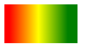
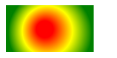

This is how an empty canvas element look.
Step 1: Find the Canvas Element
First of all, you must find the canvas element.This is done by using the HTML DOM method getElementById():
var canvas = document.getElementById("myCanvas");
Step 2: Create a Drawing Object
Secondly, you need a drawing object for the canvas.The getContext() is a built-in HTML object, with properties and methods for drawing:
var canvas = document.getElementById("myCanvas");
var ctx = canvas.getContext("2d");
Step 3: Draw on the Canvas
- Finally, you can draw on the canvas:
- Set the fill style of the drawing object to the color red. The fillStyle property can be a CSS color, a gradient, or a pattern. The default fillStyle is black.
- The fillRect(x,y,width,height) method draws a rectangle, filled with the fill style, on the canvas:
var canvas = document.getElementById("myCanvas");
var ctx = canvas.getContext("2d");
ctx.fillStyle = "#FF0000";
ctx.fillRect(0, 0, 150, 75);
As result of code below we can see red rectangle on canvas:

- The HTML canvas is a two-dimensional grid.
- The upper-left corner of the canvas has the coordinates (0,0)
- In the previous chapter we used method fillRect(0,0,150,75).This means: Start at the upper-left corner (0,0) and draw a rectangle with width 150 and height 75 pixels.
Draw a line
To draw a straight line on a canvas, use the following methods:
- moveTo(x,y) - defines the starting point of the line
- lineTo(x,y) - defines the ending point of the line
- use one of the "ink" methods, like stroke() - which strokes (outlines) the current or given path with the current stroke style
var canvas = document.getElementById("myCanvas");
var ctx = canvas.getContext("2d");
ctx.moveTo(0, 0);
ctx.lineTo(200, 100);
ctx.stroke();

Draw a circle
To draw a circle on a canvas, use the following methods:
- beginPath() - begins a path
- arc(x,y,r,startangle,endangle) - creates an arc/curve. To create a circle: set startangle to 0, endangle to 2*Math.PI, x and y define the center of the circle, r parameter defines the radius of the circle.
- use stroke() - which strokes (outlines) the current or given path with the current stroke style
var canvas = document.getElementById("myCanvas");
var ctx = canvas.getContext("2d");
ctx.beginPath();
ctx.arc(95, 50, 40, 0, 2 * Math.PI);
ctx.stroke();

Canvas Gradients
- createLinearGradient(x,y,x1,y1) - creates a linear gradient.
- createRadialGradient(x,y,r,x1,y1,r1) - creates a radial/circular gradient.
There are two different methods to define gradients:
var c = document.getElementById("myCanvas");
var ctx = c.getContext("2d");
// Create gradient
var grd = ctx.createLinearGradient(0,0,200,0);
grd.addColorStop(0.1,"red");
grd.addColorStop(0.4,"yellow");
grd.addColorStop(0.7,"green");
// Fill with gradient
ctx.fillStyle = grd;
ctx.fillRect(10,10,150,80);

var c = document.getElementById("myCanvas");
var ctx = c.getContext("2d");
// Create gradient
var grd = ctx.createRadialGradient(75,50,5,90,60,100);
grd.addColorStop(0.1,"red");
grd.addColorStop(0.4,"yellow");
grd.addColorStop(0.7,"green");
// Fill with gradient
ctx.fillStyle = grd;
ctx.fillRect(10,10,150,80);

Canvas Text
- font - defines the font properties for the text.
- fillText(text,x,y) - draws "filled" text on the canvas.
- strokeText(text,x,y) - draws text on the canvas (no fill).
To draw text on a canvas we can use next properties and methods:
var canvas = document.getElementById("myCanvas");
var ctx = canvas.getContext("2d");
ctx.font = "30px Arial";
ctx.strokeText("Hello World",10,50);
ctx.fillText("Hello World",10,80);
var canvas = document.getElementById("myCanvas");
var ctx = canvas.getContext("2d");
ctx.font="30px Comic Sans MS";
ctx.fillStyle = "red";
ctx.textAlign = "center";
ctx.fillText("Hello World", canvas.width/2, canvas.height/2);
Canvas Images
- image - an element to draw into the context. The specification permits any canvas image source.
- sx, sy - the x and y -axis coordinate of the top left corner of the sub-rectangle of the source image.
To draw an image on a canvas we can use method drawImage(image, sx, sy, sWidth, sHeight, dx, dy, dWidth, dHeight), where:
- sWidth, sHeight -the width and height of the sub-rectangle of the source image.
- dx, dy - the x and y -axis coordinate in the destination canvas at which to place the top-left corner of the source image.
- dWidth, dHeight - the width and height to draw the image in the destination canvas. This allows scaling of the drawn image. If not specified, the image is not scaled in width when drawn.
Image (id='scream'):

Canvas:
window.onload = function() {
var c = document.getElementById("myCanvas");
var ctx = c.getContext("2d");
var img = document.getElementById("scream");
ctx.drawImage(img, 10, 10);}
Image (id='scream'):
Canvas:
window.onload = function() {
var cScaled = document.getElementById("myCanvasScaled");
var ctxScaled = cScaled.getContext("2d");
var imgScaled = document.getElementById("scream");
ctxScaled.drawImage(imgScaled, 10, 10, 100, 100);}
Image (id='scream'):
Canvas:
window.onload = function() {
var cPartOfSrc = document.getElementById("myCanvasPartOfSrc");
var ctxPartOfSrc = cPartOfSrc.getContext("2d");
var imgPartOfSrc = document.getElementById("scream");
ctxPartOfSrc.drawImage(imgPartOfSrc, 60, 100, 100, 100, 100, 100, 100, 100);}